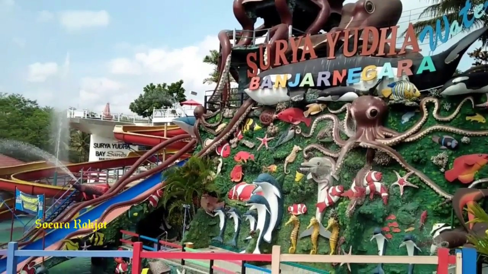

Surya Yudha
Lokasi
Obyek wisata Surya Yudha Park berada di pusat kota Banjarnegara, sehingga untuk mengunjunginya tidak butuh waktu lama. Akses jalan yang baik dengan plang penunjuk arah menuju Surya Yudha Park akan memudahkan perjalanan libur akhir pekan anda. Untuk alamatnya sendiri, Surya Yudha Park berada di Jl. Raya Rejasa , Madukara, Kec. Banjarnegara, Kab Banjarnegara, Jawa Tengah. Ketika anda berangkat dari alun-alun Banjarnegara, jarak yang harus anda tempuh kurang lebih 1,5 km saja.
Fasilitas
Menjadi obyek wisata populer dan favorit Banjarnegara, Surya Yudha Park dilengkapi dengan berbagai macam fasilitas wisata. Seperti:
Tempat parkir yang luas
Pusat informasi
Waterpark Surya Yudha Park
Toilet dan kamar mandi
Mushola Hotel
Foodcourt
Wahana permainan menarik
Lapangan olahraga
Spot foto instagenic
Bioskop Surya Yudha Park Cinema
Dijamin perjalanan liburan anda dan keluarga di akhir pekan akan menyenangkan dan tak terlupakan ketika berkunjung ke Surya Yudha Park Banjarnegara.
Harga Tiket MAsuk
Ketika anda berencana menghabiskan hari libur bersama keluarga di Surya Yudha Park, harga tiket masuknya sendiri anda cukup membayar retribusi parkir kendaraan. Banyak spot wisata yang bisa anda nikmati saat berlibur di Surya
Yudha Park Banjarnegara Jawa Tengah. Simak informasi wahana dan spot wisata Surya Yudha Park lengkap dengan harga tiketnya berikut ini:
Waterpark Anak Rp.15.000/orang
Wisata Manasik & Waterpark Rp.25.000/orang
Tiket Reguler Cinema Rp.30.000 (Weekday) Rp.35.000 (Weekend)
Waterpark Dewasa Rp.25.000/orang
Cinema 3D Rp.40.000 (Weekday) Rp.45.000 (weekend)
Adventure Rafting Package Rp.220.000/pax
Fun Rafting Package Rp.205.000/pax
Photo 3D Trick Art Rp.25.000
(Harga tiket masuk destinasi wisata Surya Yudha Park Banjarnegara bisa berubah setiap waktu).
Sedangkan untuk operasional wisatanya sendiri, Surya Yudha Park buka setiap hari mulai dari jam 08.00 – 17.00 WIB.